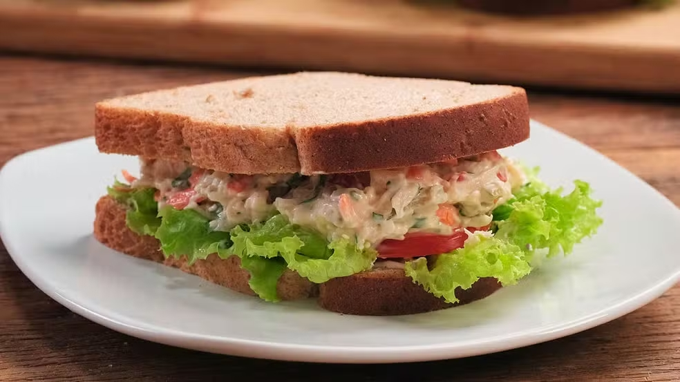

Sanduíche Natural de Frango
Uma refeição leve, nutritiva e pronta em minutos para o lanche ou pós-treino.
Preparo10 min
Rendimento2 unidades
DificuldadeFácil

Ingredientes
Modo de preparo
- Em uma tigela, misture o frango desfiado, a cenoura ralada, o requeijão e os temperos até formar um patê cremoso.
- Espalhe uma camada generosa do recheio sobre duas fatias de pão integral.
- Adicione as folhas de alface e as rodelas de tomate por cima.
- Feche com as outras fatias de pão, corte na diagonal e sirva.
Dica: Se for levar para o trabalho ou passeio, embrulhe bem em plástico filme para manter o pão macio.